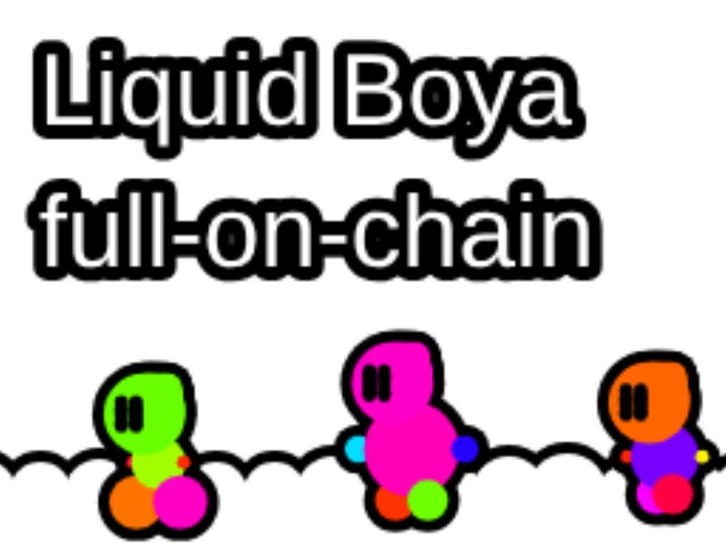
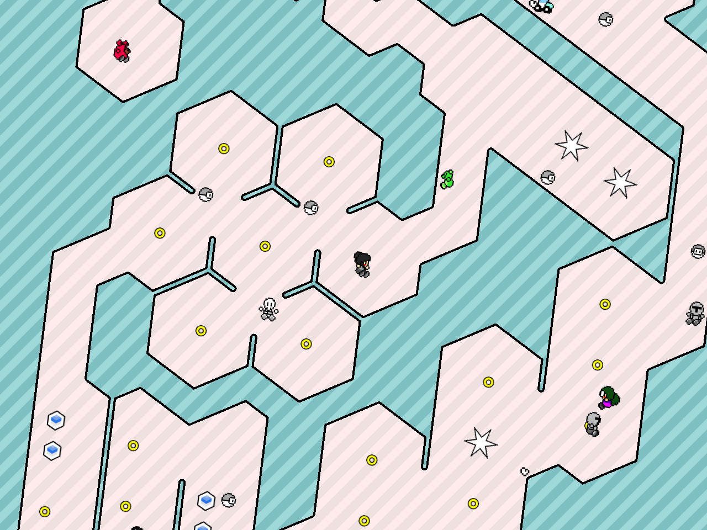
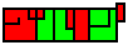
グルリンダッシュ
スマホを傾けて、重力で主人公を操作してゴールを目指すゲーム。
リプレイの再生時に挙動を揃えるには、数学関数の結果を環境間で一致させる必要があります。そこで数学関数を自作し、Web・Android・iOSでの挙動を一致させました。
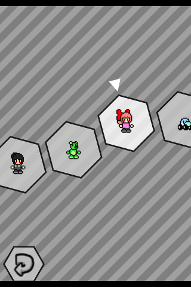
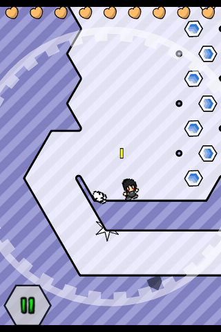
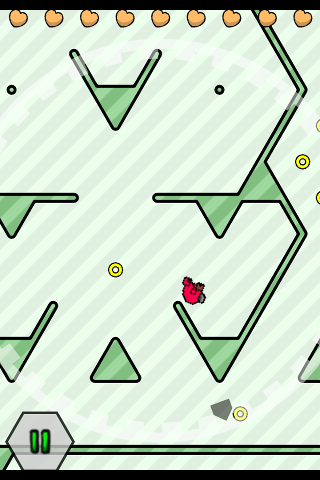
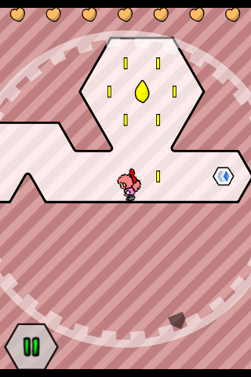
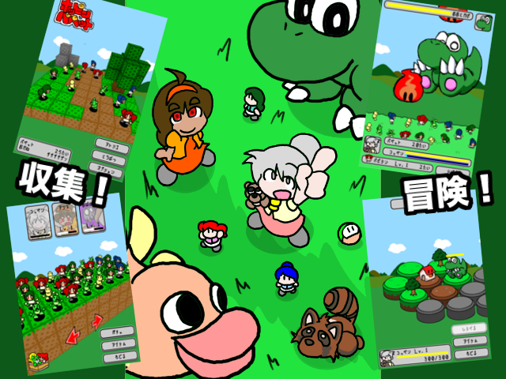
ホッピンパペット
パペットを指で弾いて、大型モンスターをバッタバッタと退治していくゲーム。
Emscriptenを使い、ほぼワンソースでWebだけでなくAndroidとiOSにも対応しました。
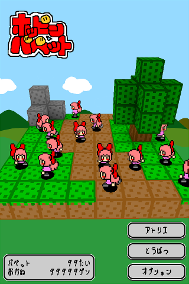
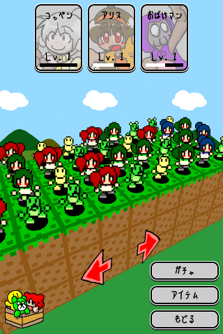
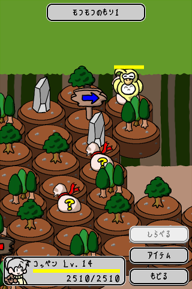
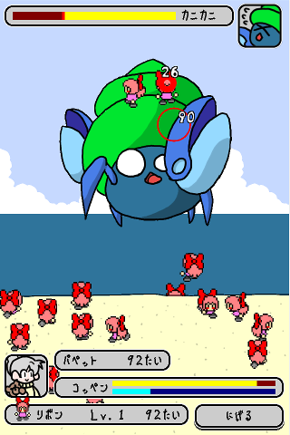
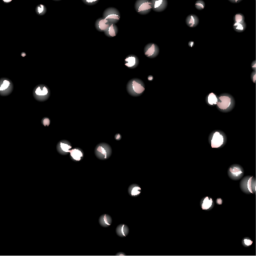
金賞
曲率さくら
Web Creator's Contest『Q the 2nd』で金賞を受賞し、サイバーエージェントへの採用のきっかけになった作品です。
他にもjsdo.itで数多くの作品を投稿しました。現在はjsdo.itのサービス停止により見ることができません。
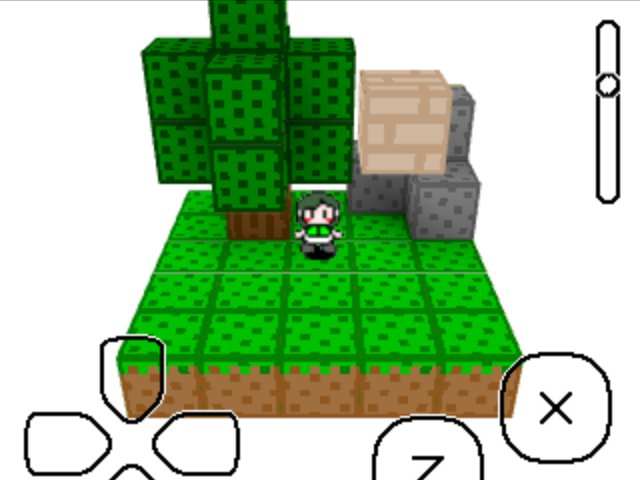